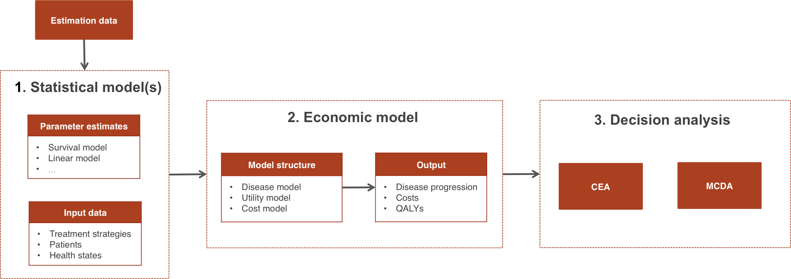

1 Overview
hesim is an R package for health-economic simulation modeling that is naturally integrated with statistical modeling and provides support for decision analysis.
As shown in the table below, N-state partitioned survival models (PSMs) and individual-level continuous time state transition models (iCTSTMs) are currently supported. The PSM is a cohort-level model that simulates representative cohorts of patients with similar characteristics while the iCTSTM simulates individual patients probabilistically using random number generation. The models are implemented as R6 classes and have methods for simulating disease progression, costs, and QALYs. We expect to add cohort-level state transition models in the near future.
| Economic model | R6 class |
|---|---|
| N-state partitioned survival model (PSM) | Psm |
| Individual-level continuous time state transition model (iCTSTM) | IndivCtstm |
An economic model is constructed by combining statistical models for disease progression, costs, and utilities. As shown in the figure, a typical analysis proceeds in a 3-step process as follows:

- Parameterization: An economic model is parameterized by estimating statistical models for disease progression, costs, and utilities using “estimation” datasets, such as extracted data from published studies for a meta-analysis or multi-state survival data from a clinical trial.
- Simulation: The statistical models estimated in Step 1 are combined to construct an economic model. For a given model structure, disease progression, QALYs, and costs are simulated from “input data”, based on the target population and treatment strategies of interest.
- Decision analysis: Simulated outcomes from Step 2 are used to perform decision analysis using approaches such as cost-effectiveness analysis (CEA) and multi-criteria decision analysis (MCDA).
The entire analysis is inherently Bayesian, as uncertainty in the parameters from the statistical models is propagated throughout the economic model and decision analysis with probabilistic sensitivity analysis (PSA). Furthermore, since the statistical and economic models are integrated, patient heterogeneity can be easily introduced with patient level covariates.
2 Treatment strategies, target population, and model structure
Before beginning an analysis, it is necessary to define the treatment strategies of interest, the target population, and the model structure. This can be done in hesim by creating a hesim_data object with the function hesim_data(). Let’s consider an example where we use an iCTSTM to evaluate two competing treatment strategies. We will consider a model with three health states (healthy, sick, and dead) with four transitions (healthy -> sick, sick -> healthy, healthy -> dead, and sick -> dead). Since we are using an individual-level model, we must simulate a target population that is sufficiently large so that uncertainty reflects uncertainty in the model parameters, rather than variability across simulated individuals.
library("hesim")
library("data.table")
strategies <- data.table(strategy_id = c(1, 2))
n_patients <- 1000
patients <- data.table(patient_id = 1:n_patients,
age = rnorm(n_patients, mean = 45, sd = 7),
female = rbinom(n_patients, size = 1, prob = .51))
states <- data.table(state_id = c(1, 2),
state_name = c("Healthy", "Sick")) # Non-death health states
tmat <- rbind(c(NA, 1, 2),
c(3, NA, 4),
c(NA, NA, NA))
colnames(tmat) <- rownames(tmat) <- c("Healthy", "Sick", "Dead")
transitions <- create_trans_dt(tmat)
transitions[, trans := factor(transition_id)]
hesim_dat <- hesim_data(strategies = strategies,
patients = patients,
states = states,
transitions = transitions)
print(hesim_dat)## $strategies
## strategy_id
## 1: 1
## 2: 2
##
## $patients
## patient_id age female
## 1: 1 58.38757 0
## 2: 2 46.66376 1
## 3: 3 51.64681 0
## 4: 4 49.41169 0
## 5: 5 45.08623 1
## ---
## 996: 996 40.53480 1
## 997: 997 42.16766 0
## 998: 998 47.07017 1
## 999: 999 40.20894 0
## 1000: 1000 48.17057 1
##
## $states
## state_id state_name
## 1: 1 Healthy
## 2: 2 Sick
##
## $transitions
## transition_id from to from_name to_name trans
## 1: 1 1 2 Healthy Sick 1
## 2: 2 1 3 Healthy Dead 2
## 3: 3 2 1 Sick Healthy 3
## 4: 4 2 3 Sick Dead 4
##
## attr(,"class")
## [1] "hesim_data"3 Parameterization
3.1 Disease progression
As shown in the table below, the statistical model used to parameterize the disease model component of an economic model varies by the type of economic model. For example, a set of N-1 independent survival models are used to parameterize an N-state partitioned survival model, while multi-state models are used to parameterize an iCTSTM.
| Economic model (R6 class) | Statistical model | Parameter object | Model fit object |
|---|---|---|---|
| Psm | Independent survival models | params_surv_list | hesim::flexsurvreg_list |
| IndivCtstm | Multi-state model | params_surv or params_surv_list | flexsurv::flexsurvreg or hesim::flexsurvreg_list |
The easiest way to parameterize a disease model is by fitting a statistical model using R. For example, survival models for PSMs and multi-state models for iCTSTMs can be fit using flexsurvreg(). A multi-state model can either be fit as a single model with a joint likelihood (a flexsurvreg object) or as a list of transition-specific models (a flexsurvreg_list object) (see Section 6 from the flexsurv vignette for details). Likewise, a list of survival models for a PSM are stored as a flexsurvreg_list object.
In other cases, the disease models will not be fit directly with R (for instance, when performing a network meta-analysis). In these cases, the estimates of a disease model can be directly stored in objects prefixed by “params_”. When a single survival model or a multi-state model with a joint likelihood is fit, parameters are stored in params_surv objects; when multiple independent survival or multi-state models with transition specific fits are used, parameters are stored in params_surv_list objects.
We will illustrate using the first approach, by estimating a multi-state model with a joint likelihood using flexsurvreg().
library("flexsurv")
mstate_data <- data.table(ctstm3_exdata$transitions)
mstate_data[, trans := factor(trans)]
fit_wei <- flexsurv::flexsurvreg(Surv(years, status) ~ trans +
factor(strategy_id):trans +
age:trans +
female: trans +
shape(trans),
data = mstate_data,
dist = "weibull")3.2 Costs and utility
hesim currently supports two types of models for modeling costs and utilities: mean (i.e., intercept-only) models and linear models.
| Statistical model | Parameter object | Model fit object |
|---|---|---|
| Mean model | params_mean | stateval_tbl |
| Linear model | params_lm | stats::lm |
Linear models can be fit using lm(). Mean models are most easily constructed from a stateval_tbl object, which is a special object used to assign values to health states. The table allows users to specify mean values that can vary across health states, treatment strategies, patients, and/or time intervals. State values can be specified either as moments (i.e., mean and standard error) or parameters (e.g., shape and scale of gamma distribution) of a probability distribution, or by pre-simulating values from a suitable probability distribution. Here we will use stateval_tbl objects for utility and two cost categories (drug and medical).
# Utility
utility_tbl <- stateval_tbl(data.table(state_id = states$state_id,
mean = ctstm3_exdata$utility$mean,
se = ctstm3_exdata$utility$se),
dist = "beta",
hesim_data = hesim_dat)
# Costs
drugcost_tbl <- stateval_tbl(data.table(strategy_id = strategies$strategy_id,
est = ctstm3_exdata$costs$drugs$costs),
dist = "fixed",
hesim_data = hesim_dat)
medcost_tbl <- stateval_tbl(data.table(state_id = states$state_id,
mean = ctstm3_exdata$costs$medical$mean,
se = ctstm3_exdata$costs$medical$se),
dist = "gamma",
hesim_data = hesim_dat) 4 Simulation
4.1 Constructing an economic model
An economic model consists of a disease model, a utility model, and a set of cost models for each cost category. The utility and cost models are always StateVals objects, whereas the disease models vary by economic model. In a PSM, the disease model is a PsmCurves object used to simulate survival curves. The disease model in an iCTSTM simulated health states transitions and is a IndivCtstmTrans object.
| Economic model | Disease model | Utility model | Cost model(s) |
|---|---|---|---|
| Psm | PsmCurves | StateVals | StateVals |
| IndivCtstm | IndivCtstmTrans | StateVals | StateVals |
Since economic models in hesim are inherently Bayesian, we must specify the number of parameter samples we will use for the PSA before constructing the model.
4.1.1 Disease model
Models are constructed as a function of parameters (or model fits) and in regression models, input data. The input data must be objects of class expanded_hesim_data, which are data tables containing the covariates for the statistical model. In our multi-state model, each row is a unique treatment strategy, patient, and health-state transition. The ID variables (strategy_id, patient_id, and transition_id) are stored as attributes of the dataset.
An “expanded_hesim_data” object can be created directly or by expanding an object of class “hesim_data” using expand.hesim_data(). Here, we will use the latter approach,
transmod_data <- expand(hesim_dat,
by = c("strategies", "patients", "transitions"))
head(transmod_data)## strategy_id patient_id transition_id age female from to from_name
## 1: 1 1 1 58.38757 0 1 2 Healthy
## 2: 1 1 2 58.38757 0 1 3 Healthy
## 3: 1 1 3 58.38757 0 2 1 Sick
## 4: 1 1 4 58.38757 0 2 3 Sick
## 5: 1 2 1 46.66376 1 1 2 Healthy
## 6: 1 2 2 46.66376 1 1 3 Healthy
## to_name trans
## 1: Sick 1
## 2: Dead 2
## 3: Healthy 3
## 4: Dead 4
## 5: Sick 1
## 6: Dead 2attr(transmod_data, "id_vars")## [1] "strategy_id" "patient_id" "transition_id"We can now construct the health state transition model, which creates an IndivCtstmTrans object that can be used to simulate health state transitions.
transmod <- create_IndivCtstmTrans(fit_wei, transmod_data,
trans_mat = tmat, n = n_samples)
class(transmod)## [1] "IndivCtstmTrans" "CtstmTrans" "R6"4.1.2 Cost and utility models
Since we did not use a regression model for costs or utilities, we do not need to specific input data. Instead, we can construct the cost and utility models directly from the stateval_tbl objects.
# Utility
utilitymod <- create_StateVals(utility_tbl, n = n_samples)
# Costs
drugcostmod <- create_StateVals(drugcost_tbl, n = n_samples)
medcostmod <- create_StateVals(medcost_tbl, n = n_samples)
costmods <- list(drugs = drugcostmod,
medical = medcostmod)4.2 Simulating outcomes
Each economic model contains methods (i.e., functions) for simulating disease progression, costs, and QALYs. These methods are summarized in the table below.
| Economic model (R6 class) | Disease progression | QALYs | Costs |
|---|---|---|---|
| Psm | $sim_survival() and $sim_stateprobs() | $sim_qalys() | $sim_costs() |
| IndivCtstm | $sim_disease() and $sim_stateprobs() | $sim_qalys() | $sim_costs() |
More specifically, the methods for each economic model can be summarized as follows:
-
PSM:
$sim_survival()simulates survival curves and$sim_stateprobs()computed health state probabilities as a function of time based on those survival curves.$sim_costs()and$sim_qalys()compute simulated costs and QALYs based on the values assigned to states from the cost and utility models and the expected time spent in each state. -
iCTSTM:
$sim_disease()uses random number generation to simulate a disease trajectory and$sim_stateprobssummarize that trajectory by computing the probability patients in the target population are in each health state as a function of time.$sim_costs()and$sim_qalys()compute simulated costs and QALYs for each simulated patient based on the times at which they enter health states.
We illustrate with the iCTSTM. First we simulate disease progression for each patient.
ictstm$sim_disease()
head(ictstm$disprog_)## sample strategy_id patient_id from to final time_start time_stop
## 1: 1 1 1 1 2 0 0.0000000 5.7068151
## 2: 1 1 1 2 3 1 5.7068151 5.9465439
## 3: 1 1 2 1 2 0 0.0000000 0.5825965
## 4: 1 1 2 2 1 0 0.5825965 1.6046995
## 5: 1 1 2 1 2 0 1.6046995 4.4218070
## 6: 1 1 2 2 3 1 4.4218070 7.2400721The disease trajectory can be summarized with $sim_stateprobs().
## sample strategy_id state_id t prob
## 1: 1 1 1 0 1.000
## 2: 1 1 1 1 0.888
## 3: 1 1 1 2 0.807
## 4: 1 1 1 3 0.724
## 5: 1 1 1 4 0.639
## 6: 1 1 1 5 0.584We can then compute costs and QALYs (using a discount rate of 3 percent).
# QALYs
ictstm$sim_qalys(dr = .03)
head(ictstm$qalys_)## sample strategy_id state_id dr qalys lys
## 1: 1 1 1 0.03 7.260489 9.220131
## 2: 1 1 2 0.03 0.887593 1.555886
## 3: 1 2 1 0.03 7.502707 9.527725
## 4: 1 2 2 0.03 0.795603 1.394635
## 5: 2 1 1 0.03 6.325110 8.135607
## 6: 2 1 2 0.03 1.436666 2.012034# Costs
ictstm$sim_costs(dr = .03)
head(ictstm$costs_)## sample strategy_id state_id dr category costs
## 1: 1 1 1 0.03 drugs 46100.657
## 2: 1 1 2 0.03 drugs 7779.432
## 3: 1 2 1 0.03 drugs 95277.247
## 4: 1 2 2 0.03 drugs 13946.346
## 5: 2 1 1 0.03 drugs 40678.033
## 6: 2 1 2 0.03 drugs 10060.1685 Decision analysis
Once output has been simulated with an economic model, a decision analysis can be performed. Cost-effectiveness analyses can be performed using other R packages such as BCEA or directly with hesim as described in more detail here. hesim does not currently provide support for MCDA.
To perform a CEA, simulated costs and QALYs can be summarized to create a ce object, which contains mean costs and QALYs for each sample from the PSA by treatment strategy.
ce <- ictstm$summarize()
print(ce)## $costs
## category dr sample strategy_id costs
## 1: drugs 0.03 1 1 53880.09
## 2: drugs 0.03 1 2 109223.59
## 3: drugs 0.03 2 1 50738.20
## 4: drugs 0.03 2 2 102751.73
## 5: drugs 0.03 3 1 57271.33
## ---
## 5996: total 0.03 998 2 130340.30
## 5997: total 0.03 999 1 64227.79
## 5998: total 0.03 999 2 131524.30
## 5999: total 0.03 1000 1 70453.75
## 6000: total 0.03 1000 2 131219.57
##
## $qalys
## dr sample strategy_id qalys
## 1: 0.03 1 1 8.148083
## 2: 0.03 1 2 8.298310
## 3: 0.03 2 1 7.761776
## 4: 0.03 2 2 7.908090
## 5: 0.03 3 1 5.288053
## ---
## 1996: 0.03 998 2 9.951396
## 1997: 0.03 999 1 6.961348
## 1998: 0.03 999 2 7.719214
## 1999: 0.03 1000 1 6.796724
## 2000: 0.03 1000 2 6.705138
##
## attr(,"class")
## [1] "ce"The functions icea() and icea_pw, which perform individualized cost-effectiveness analysis and incremental individualized cost-effectiveness analysis, respectively, can be used.
icea <- icea(ce, dr_qalys = .03, dr_costs = .03)
icea_pw <- icea_pw(ce, dr_qalys = .03, dr_costs = .03, comparator = 1)For instance, we might want to plot a cost-effectiveness acceptability curve (CEAC) displaying the probability that treatment strategy 2 is more cost-effective than treatment strategy 1 at a given willingness to pay for a QALY.
library("ggplot2")
ggplot2::ggplot(icea_pw$ceac, aes(x = k, y = prob, col = factor(strategy_id))) +
geom_line() + xlab("Willingness to pay") +
ylab("Probability most cost-effective") +
scale_x_continuous(breaks = seq(0, 200000, 100000), label = scales::dollar) +
theme(legend.position = "bottom") + scale_colour_discrete(name = "Strategy") +
theme_minimal()